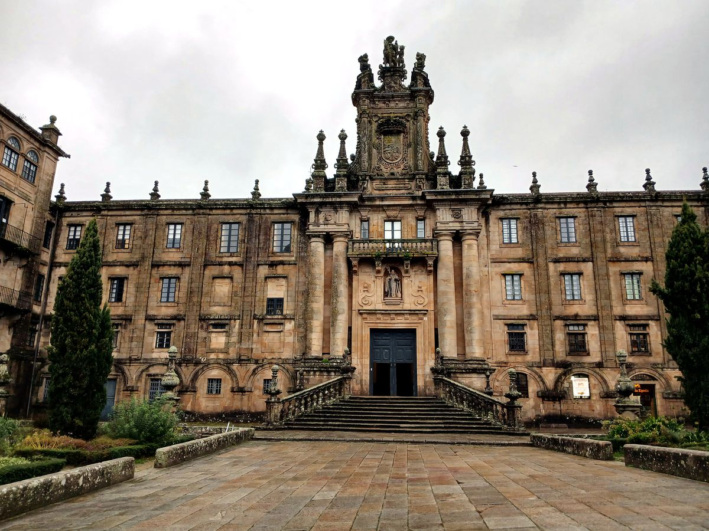

De un bautismo a cinco generaciones.
Una familia nos pidió un solo documento: el bautismo de un antepasado que emigró de Galicia a La Habana. En cuatro horas de consulta en el Archivo Histórico Diocesano de Santiago de Compostela volvimos con su bautismo, el de su padre, el matrimonio de sus abuelos maternos y los nombres de sus abuelos, bisabuelos y tatarabuelos.
El punto de partida eran sus papeles cubanos: su matrimonio y su defunción en La Habana decían de qué parroquia gallega era natural y cómo se llamaban sus padres. Ni siquiera el apellido era seguro: aparecía escrito de cuatro maneras distintas entre los papeles cubanos y los libros gallegos del siglo XVIII. Era la misma familia.



- Personas en el árbol
- 319
- Generaciones
- 25
- Partidas gallegas
- 010
- ninguna localizada6 transcritas y 4 anotadas
Antepasado
Padres
Abuelos
Bisabuelos
Tatarabuelos
y 12 tatarabuelos más por descubrir
- Bautismos
- El del antepasado buscado (1864), el de un hermano suyo (1856), el de su padre (1824) y los de dos hermanos de su abuelo (1792 y 1797), que dan los nombres de sus tatarabuelos. Anotamos además los de otros tres hermanos y otro hermano del abuelo.
- Matrimonio
- El de sus abuelos maternos, celebrado en 1828 en la parroquia de origen. Da los nombres de los padres de ambos y abre una nueva vía en otra parroquia, a unos 35 km, de donde venía el abuelo.
- Defunciones
- Una nota al margen del bautismo del padre da la fecha de su muerte, en 1891. El antepasado buscado murió en La Habana en 1902.
- Aldeas y distancias
- La línea paterna vivió cinco generaciones en la misma aldea, a unos 10 km de Santiago. Los padres de una bisabuela eran de una parroquia vecina, a unos 2 km, y el abuelo materno venía de otra a unos 35 km. Cada parroquia nueva es otra serie de libros por consultar.
Para situar a la familia identificamos también, con sus nombres actuales, las quince aldeas que atendía la parroquia en 1856–1879: varias figuraban en el libro con grafías antiguas que hoy no aparecen en el mapa. El informe terminaba con los siguientes pasos posibles: el matrimonio de los padres, el bautismo de la madre y las demás líneas maternas.